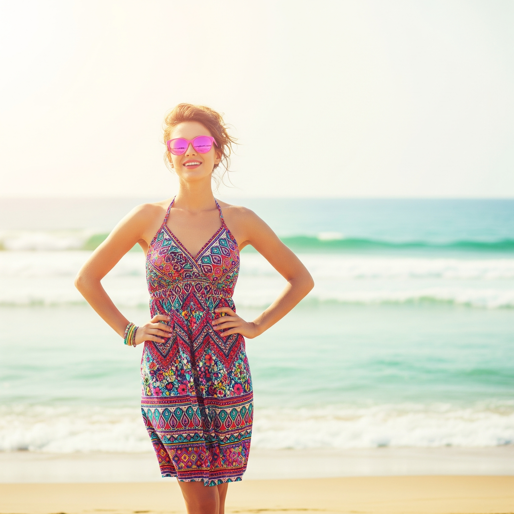

白Tシャツにカーキのショートパンツを合わせた、王道の爽やか夏コーデ。足元は白いスニーカーで軽快に。シンプルな組み合わせながら、清潔感があり、どんなシーンにもマッチします。公園での散歩や、海辺のカフェなど、アクティブな夏の休日にぴったりのスタイルです。
鮮やかな柄のワンピースが主役の、夏らしいコーディネート。日差しに映えるピンクのサングラスが、遊び心をプラスしてくれます。リラックス感のあるアップヘアで、涼しげな印象に。ビーチやリゾート、夏祭りなど、特別なイベントにもおすすめです。一枚で華やかになるワンピースは、夏のワードローブに欠かせないアイテムです。